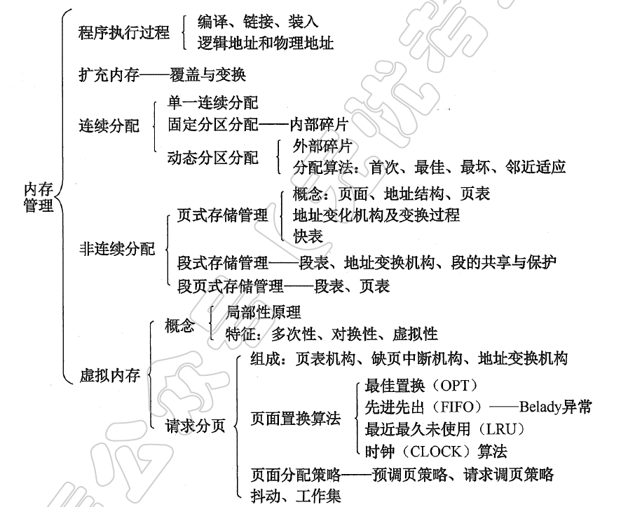
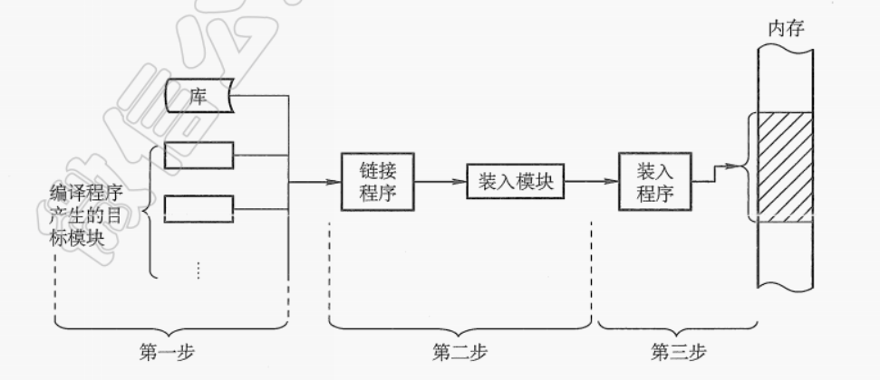
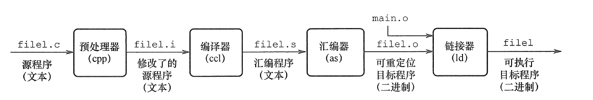

CH5-内存管理
内存管理
为什么需要进行内存管理？
计算机的内存资源是有限的，而程序运行所需的内存空间需求是动态变化的。如果没有有效的内存管理机制，可能会导致内存浪费、过度使用或者内存泄漏等问题，这些问题会进一步引起程序运行缓慢甚至系统崩溃。
学习路线
从硬件到最底层内存的分配算法–>到内核的内存分配算法–>应用程序与内核的交互–>到内存如何做磁盘的缓存 –> 内存如何和磁盘替换。
内存管理理论知识
作用
- 内存空间的分配与回收。由操作系统完成主存储器空间的分配和管理，使程序员摆脱存储分配的麻烦，提高编程效率。
- 地址转换。在多道程序环境下，程序中的逻辑地址与内存中的物理地址不可能一致，因此存储管理必须提供地址变换功能，把逻辑地址转换成相应的物理地址。
- 内存空间的扩充。利用虚拟存储技术或自动覆盖技术，从逻辑上扩充内存。
- 存储保护。保证各道作业在各自的存储空间内运行，互不干扰。
程序装入与链接

C语言的编译过程是将人类可读的源代码转换为机器可执行代码的过程，通常分为四个主要阶段，每个阶段由不同的工具处理：
预处理（Preprocessing）
- 输入：
.c源文件（如main.c） - 输出：预处理后的文本文件（如
main.i） - 工具：预处理器（如
cpp） - 关键操作：
- 展开头文件（
#include <stdio.h>→ 插入stdio.h的内容）。 - 宏替换（
#define PI 3.14→ 所有PI替换为3.14）。 - 条件编译（处理
#ifdef、#ifndef、#endif）。 - 删除注释（
//或/*...*/）。
- 展开头文件（
- 示例命令：
gcc -E main.c -o main.i
- 输入：
编译（Compilation）
- 输入：预处理后的文件（
.i） - 输出：汇编代码文件（
.s，如main.s） - 工具：编译器（如
gcc的编译器核心） - 关键操作：
- 词法分析：将代码拆分为标记（tokens，如关键字、变量名）。
- 语法分析：构建抽象语法树（AST），检查语法错误。
- 语义分析：验证类型、作用域等规则（如变量是否声明）。
- 优化与代码生成：生成目标平台的汇编代码（如 x86 或 ARM 指令集）。
- 示例命令：
gcc -S main.i -o main.s
- 输入：预处理后的文件（
汇编（Assembly）
- 输入：汇编文件（
.s） - 输出：目标文件（
.o或.obj，如main.o） - 工具：汇编器（如
as） - 关键操作：
- 将汇编代码逐行转换为机器指令（二进制）。
- 生成目标文件（包含机器码、符号表、重定位信息等）。
- 示例命令：
gcc -c main.s -o main.o
- 输入：汇编文件（
链接（Linking）
- 输入：目标文件（
.o）和库文件（如libc.a） - 输出：可执行文件（如
a.out或main.exe） - 工具：链接器（如
ld） - 关键操作：
- 符号解析：解决函数/变量的引用（如
printf的实现）。 - 重定位：合并所有目标文件，分配内存地址。
- 库处理：
- 静态链接：将库代码复制到可执行文件中（文件较大）。
- 动态链接：运行时加载共享库（如
.dll或.so，文件较小）。
- 符号解析：解决函数/变量的引用（如
- 示例命令：
gcc main.o -o main
- 输入：目标文件（
完整流程示例
1 | graph LR |
编译。由编译程序将用户源代码编译成若于目标模块。
链接。由链接程序将编译后形成的一组目标模块及所需的库函数链接在一起，形成一个完整的装入模块。
- ==静态链接==。在程序运行之前，先将各目标模块及它们所需的库函数链接成一个完整的可执行程序，以后不再拆开。
- ==装入时动态链接==。将用户源程序编译后所得到的一组目标模块，在装入内存时，采用边装入边链接的方式。
- ==运行时动态链接==。对某些目标模块的链接，是在程序执行中需要该目标模块时才进行的。其优点是便于修改和更新，便于实现对目标模块的共享。
装入。由装入程序将装入模块装入内存运行。
- ==绝对装入==。编译程序将产生绝对地址的目标代码。绝对装入程序按照装入模块中的地址，将程序和数据装入内存。绝对装入方式只适用于单道程序环境。另外，程序中所用的绝对地址，可在编译或汇编时给出，也可由程序员直接赋予。
- ==可重定位装入==。在多道程序环境下，多个目标模块的起始地址（简称始址）通常都从0开始，程序中的其他地址都是相对于始址的。根据内存的当前情况，将装入模块装入内存的适当位置。装入时对目标程序中指令和数据的修改过程称为重定位，地址变换通常是在装入时一次完成的，所以又称静态重定位。静态重定位的特点是，一个作业装入内存时，一必须给它分配要求的全部内存空间，若没有足够的内存，则不能装入该作业。此外，作业一旦进入内存，整个运行期间就不能在内存中移动，也不能再申请内存空间。
- ==动态重定位==。动态运行时装入，程序在内存中若发生移动，则需要采用动态的装入方式。装入程序把装入模块装入内存后，不立即把装入模块中的相对地址转换为绝对地址，而是把这种地址转换推迟到程序真正要执行时才进行。因此，装入内存后的所有地址均为相对地址。这种方式需要一个重定位寄存器的支持。特点如下：
- 可以将程序分配到不连续的存储区中；
- 在程序运行之前可以只装入它的部分代码即可投入运行，然后在程序运行期间，根据需要动态申请分配内存；
- 便于程序段的共享，可以向用户提供一个比存储空间大得多的地址空间。
内存保护
内存分配前，需要保护操作系统不受用户进程的影响，同时保护用户进程不受其他用户进程的影响。内存保护可采取两种方法：
在CPU中设置一对上、下限寄存器，存放用户作业在主存中的下限和上限地址，每当CPU要访问一个地址时，分别和两个寄存器的值相比，判断有无越界。
采用重定位寄存器（或基址寄存器）–>最小的物理地址和界地址寄存器（又称限长寄存器）–>最小的物理地址值来实现这种保护。逻辑地址值必须小于界地址寄存器；==界地址寄存器==进行==比较==，则**==加==上==重定位寄存器==的值**后映射成物理地址，再送交内存单元。
交换与覆盖
覆盖和交换的提出就是为了解决主存空间不足的问题，但不是在物理上扩充主存，从而在==逻辑上扩充主存==。交换技术主要在不同进程（或作业）之间进行，而覆盖则用于同一个程序或进程中。
覆盖：
用户空间分成一个固定区和若干覆盖区。将经常活跃放在固定区，其余按调用分段。
打破了必须将一个进程的全部信息装入主存后才能运行的限制，但当同时运行程序的代码量大于主存时仍不能运行
此外，内存中能够更新的地方只有覆盖区的段，不在覆盖区中的段会常驻内存。
交换：
- 把处于等待状态的程序从内存移到辅存，把内存空间腾出来，这一过程又称换出；把准备好竞争CPU运行的程序从
辅存移到内存，这一过程又称换入。 - 交换需要备份存储，通常是快速磁盘。它必须足够大，并提供对这些内存映像的直接访问。
- 交换空间通常作为磁盘的一整块，且独立于文件系统，因此使用起来可能很快。
- 把处于等待状态的程序从内存移到辅存，把内存空间腾出来，这一过程又称换出；把准备好竞争CPU运行的程序从
虚拟内存
- 定义： 虚拟内存是一种内存管理技术，它为每个进程提供一个连续的、私有的、远大于实际物理内存的地址空间（虚拟地址空间）。这个空间被映射到物理内存和磁盘上的交换空间。
- 解决的问题：
- 内存不足： 允许运行比物理内存更大的程序。
- 内存碎片： 提供连续的虚拟地址空间，隐藏物理内存的碎片。
- 进程隔离与保护： 每个进程有自己的地址空间，一个进程无法直接访问另一个进程的内存（除非显式共享），提高了安全性。
- 简化编程： 程序员无需关心物理内存的实际布局和大小限制。
==为了保证操作系统的稳定性和安全性。用户程序不可以直接访问硬件资源==，如果用户程序需要访问硬件资源，必须调用操作系统提供的接口，这个调用接口的过程也就是系统调用。每一次系统调用都会存在两个内存空间之间的相互切换，通常的网络传输也是一次系统调用，通过网络传输的数据先是从内核空间接收到远程主机的数据，然后再从内核空间复制到用户空间，供用户程序使用。这种从内核空间到用户空间的数据复制很费时，虽然保住了程序运行的安全性和稳定性，但是牺牲了一部分的效率。
如何分配用户空间和内核空间的比例也是一个问题，是更多地分配给用户空间供用户程序使用，还是首先保住内核有足够的空间来运行。在当前的Windows 32位操作系统中，默认用户空间：内核空间的比例是1:1，而在32位Linux系统中的默认比例是3:1（3GB用户空间、1GB内核空间）（这里只是地址空间，映射到物理地址，可没有某个物理地址的内存只能存储内核态数据或用户态数据的说法）。
内存泄漏
内存泄漏（Memory Leak） 指程序在运行过程中动态申请内存后未正确释放，导致该内存无法被再次使用的现象。随着程序运行时间增长，泄漏的内存会不断累积，最终可能耗尽系统资源，引发程序崩溃或系统性能下降。
狭义内存泄漏
- 动态内存未释放：如
malloc/new后未free/delete。 - 常见原因：
- 函数提前返回未释放内存。
- 循环中重复分配未释放。
- 全局指针覆盖前未释放旧内存。
- 动态内存未释放：如
广义内存泄漏
- 资源未回收：不仅限于堆内存，还包括：
- 文件描述符未关闭（
fd泄漏）。 - 线程句柄未释放。
- 图形资源（如 GPU 纹理）未销毁。
- 文件描述符未关闭（
- 资源未回收：不仅限于堆内存，还包括：
==解决方案==
配对管理：确保每个
malloc对应一个free。所有权清晰：明确哪个模块负责释放内存（如使用 RAII 模式）。
静态分析工具：使用 Clang Static Analyzer、Coverity 等检测潜在泄漏。
环境 解决策略 裸机环境 - 使用内存池预分配固定块 - 避免动态分配，改用静态数组+状态管理 RTOS平台 - 启用内存统计功能（如 FreeRTOS 的 heap_4.c） - 监控任务内存使用峰值Linux/Android - Valgrind/Memcheck 检测泄漏 -
ASan（AddressSanitizer）实时检测 -kmemleak（内核泄漏检测）在C++中使用智能指针（
std::shared_ptr,std::unique_ptr）或者容器类（std::vector替代手动数组）
智能指针
类型 所有权 拷贝/移动 线程安全 适用场景 shared_ptr共享 允许拷贝 引用计数原子安全 多对象共享数据 unique_ptr独占 仅允许移动 无额外开销 资源独占场景（文件句柄等） weak_ptr无所有权 可拷贝 依赖关联shared_ptr 打破循环引用/缓存观测 具体的使用场景：
1. 类对象管理（
shared_ptr）1
2
3
4
5
6
7
8
9
10
11
12
13
14
15
16
17
18
19
20
class Sensor {
public:
Sensor(int id) : sensor_id(id) {}
void read() { /* 读取传感器数据 */ }
private:
int sensor_id;
};
int main() {
// 创建智能指针管理的类对象
std::shared_ptr<Sensor> sensor1 = std::make_shared<Sensor>(101);
// 共享所有权
std::shared_ptr<Sensor> sensor2 = sensor1; // 引用计数+1
sensor1->read(); // 正常访问成员函数
return 0; // 自动销毁对象
}2. 动态数组管理（
unique_ptr）1
2
3
4
5
6
7
8// 管理动态数组（自动调用delete[]）
std::unique_ptr<int[]> data_buffer(new int[1024]);
// 访问数组元素
data_buffer[0] = 42;
// 移动所有权（不可拷贝）
std::unique_ptr<int[]> new_owner = std::move(data_buffer);3. 循环引用破解（
weak_ptr）1
2
3
4
5
6
7
8
9
10
11
12
13
14
15struct Node {
std::shared_ptr<Node> next;
std::weak_ptr<Node> prev; // 关键：弱引用打破循环
};
auto node1 = std::make_shared<Node>();
auto node2 = std::make_shared<Node>();
node1->next = node2;
node2->prev = node1; // 不会增加引用计数
// 检测weak_ptr目标是否存在
if (auto locked = node2->prev.lock()) {
// 安全使用locked（shared_ptr）
}